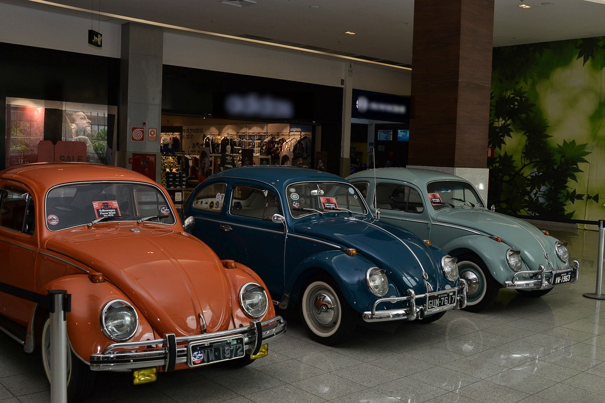

Fusca
DIA NACIONAL DO FUSCA 21 DE JANEIRO 2018
Em comemoração ao Dia Nacional do Fusca, celebrado neste sábado (20), uma exposição está sendo realizada em Ipatinga, no Vale do Aço. Quinze modelos de fusca e de três carros antigos estão expostos no shopping da cidade e a visitação gratuita pode ser feita até o dia 29 de janeiro. O Fusca foi lançado na década de 1930 na Alemanha, mas só começou a ser produzido no Brasil em 1959 e se tornou um dos modelos mais populares do país. Em 1996, o carro deixou de ser produzido, porém não é difícil encontrar um amante do modelo, como o colecionador de Ipatinga, Roberto Alvim.